CS 180: Computer Vision and Computational Photography
Overview
This project explores the multifarious ways of utilizing image filters and image frequency bands to come up with unique and interesting results.
These include Edge Detection using Derivative of Gaussian (DoG) Filters, hybridizing images so that what you view changes as a function of your distance from the image,
image sharpening, and multi-resolution blending. The power of these methods enables us to put creative ideas into picture! (You might see a Wimbledon Champion you've never heard of before!)
This webpage will go through each of these methods in great detail showing all the images (intermediary and results) involved.
Finite Difference Operator
In this section, we work on the image of a cameraman. I use two finite difference operators namely [1 -1] and [1 -1].T to compute the partial derivatives with respect to x and y respectively. This is done through convolution by using the scipy.convolve2d function with mode = same. Once I have these convolved images, I combine them using np.sqrt(dx_deriv ** 2 + dy_deriv ** 2) and I create an edge image by binarizing the gradient magnitude image by empirically picking the correct threshold.
Since the partial derivative images were rather noisy, I first apply a gaussian kernel on the original image through convolution. Once the original image, I repeat the same finite-difference-operator process above. Here are the results:
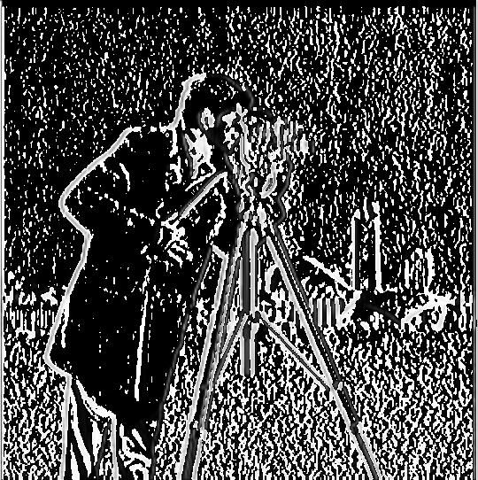Partial Derivative wrt. x on Gaussian Blurred Image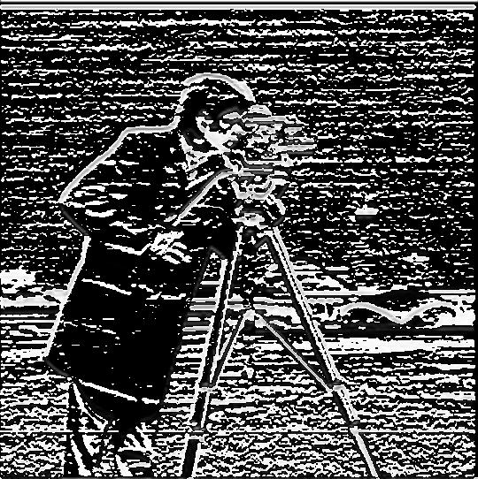Partial Derivative wrt. y on Gaussian Blurred Image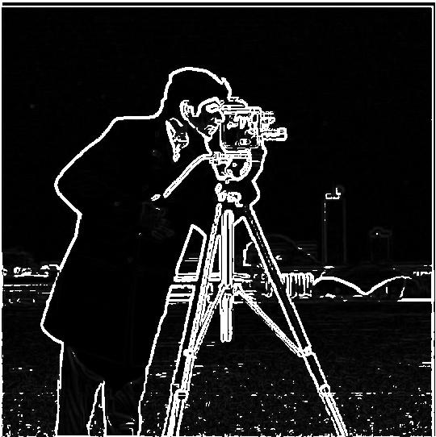COmbined Image: Edge Map (Threshold = 29)
What differences do I see? In the case of the Gaussian kernel filter, there are little to no unneccessary artifacts on the image. This would allow us to arrive at a better quality edge map.
DoG in one convolution operation
Instead of first applying the Gaussian kernel on our original image and then convolving them with Dx and Dy finite finite-difference-operators, I can use a single convolution operation. I first convolve the Gaussian kernel with Dx and Dy.
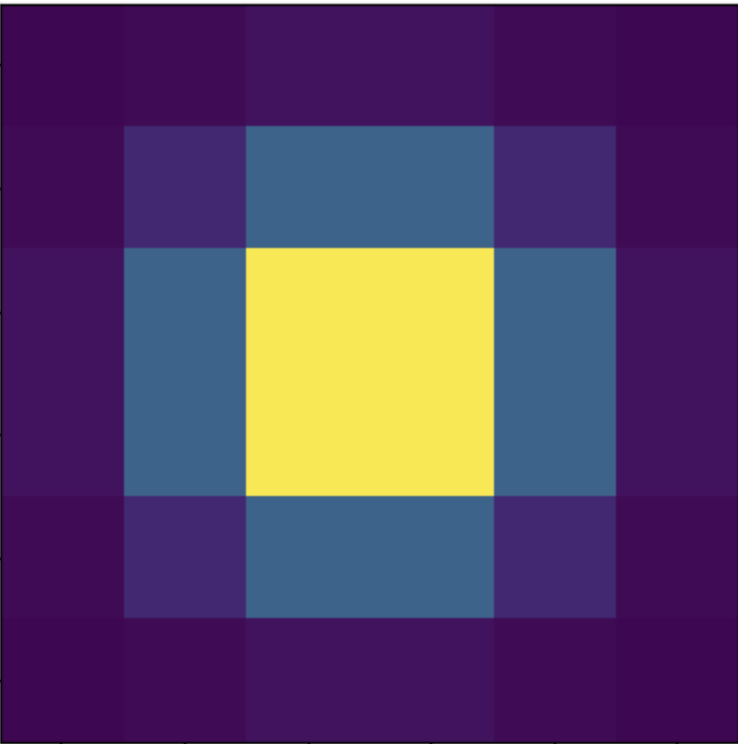Gaussian Kernel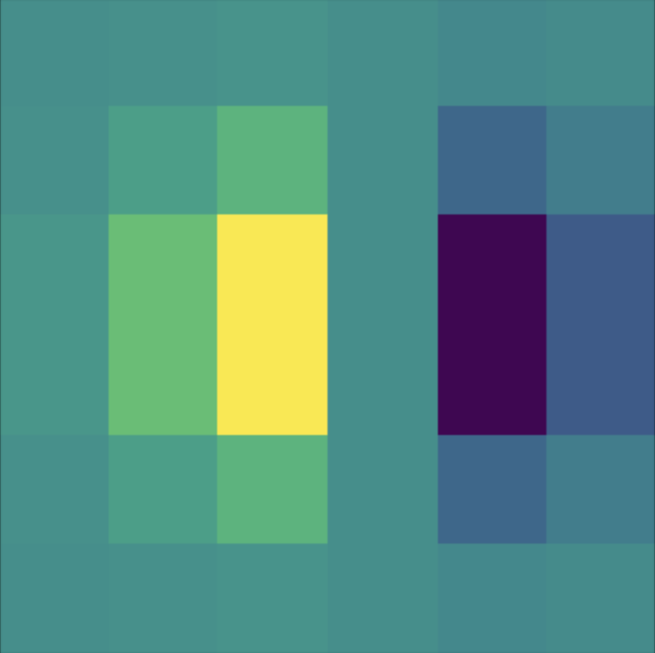Gaussian Kernel convolved with Dx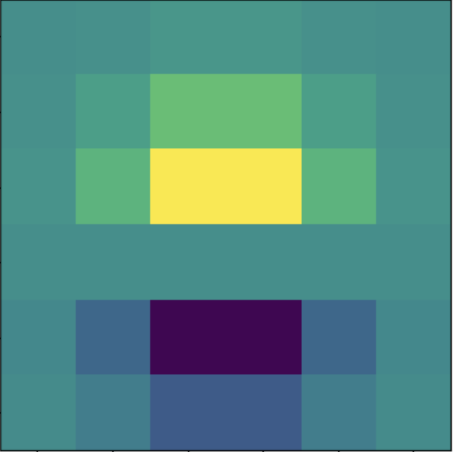Gaussian Kernel convolved with Dy
Now I apply these kernels on the original unblurred image to get their "smoothened" partial derivatives with respect to x and y. Once I have these images, I combine them using np.sqrt(dx_deriv ** 2 + dy_deriv ** 2) to get the gradient magnitude image.
As can be seen, because of commutativity of how convolution operations are applied, we get the same result as before.
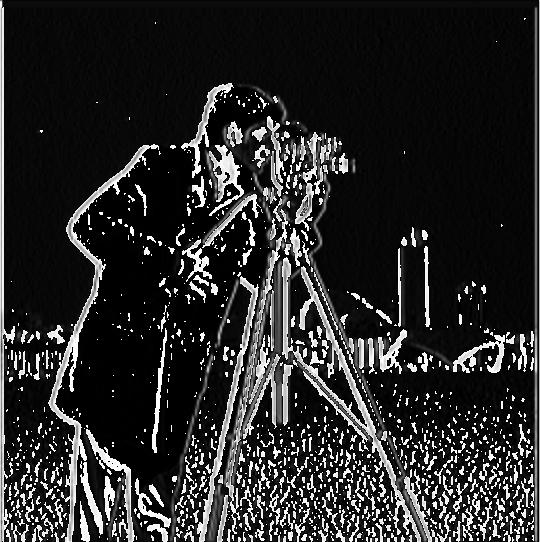Partial Derivative wrt. x on Original Image using Gaussian Kernel convolved with Dx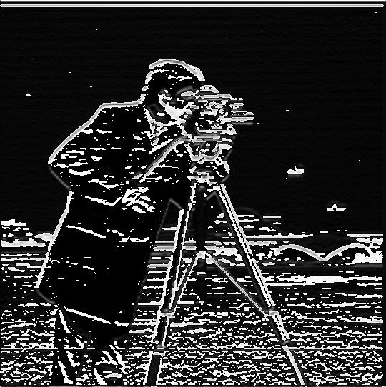Partial Derivative wrt. y on Original Image using Gaussian Kernel convolved with Dy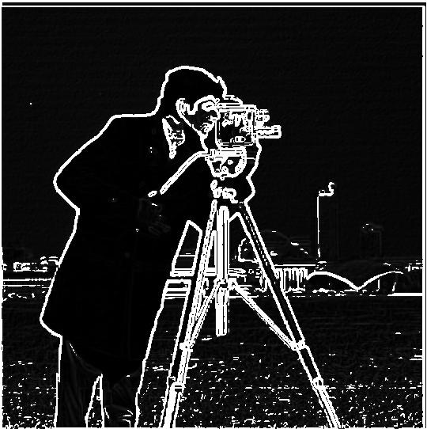Combined Image
COmparison of the final images through both methods. Images are very similar.
Result through multiple convolution operationsResult through single DoG convolution operations
Image Sharpening
In order to sharpen an image target, the image is convolved with a gaussian kernel in order to filter out higher frequencies, resulting in a blurred image blurred. The high-frequency details are then calculated through details = target - blurred, which removes all lower frequency features from the original image. These details are then emphasized in the final image through result = target + alpha * details where alpha is a constant sharpening factor. The value of alpha is picked through experimentation.
Just like how the we know that the Gaussian Kernel can be used as the convolution operator for low-pass image filtering, I also derived the high pass convolution operator (called the unsharp mask filter) which gives you the higher frequencies of the image.
Unsharp mask filter = (1 + alpha) * identity - alpha * gauss2d. Doesn't matter how one computes the high frequency images - either directly or through the unmask shape filter, both methods resilt in the exact same image.
Below, is an illustration of the image sharpening process of the given image of the Taj Mahal and a personally selected image of 20-time Tennis Grand-Slam Champion Roger Federer
Sharpening the Taj
Original Taj Mahal Image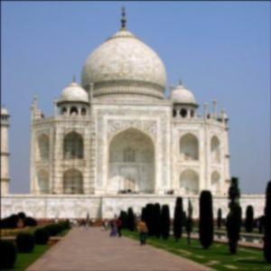Gaussian Blurred Taj Mahal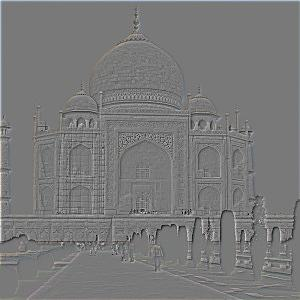High Frequency Taj Mahal
Original Roger Federer ImageSharpened Roger Federer
Blurring and Re-Sharpening the GOAT
To test out how good the image sharpening process enhances the quality of an image, let's compare the quality of the original Roger Federer and the Roger Federer image that's first gaussian blurred and then sharpened.
Original Roger Federer Image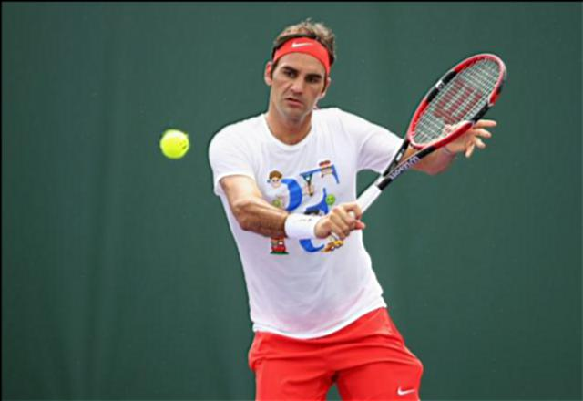Gaussian Blurred and re-sharpened Roger Federer
THE VERDICT: When comparing the original and the blurred-> sharpened versions of the RF images, they are similar, the original image does have more information in the image and is of better quality but the blurred and sharpened image does a good job of getting close.
Hybrid Images
The goal of this part of the assignment is to create hybrid images using the approach described in the SIGGRAPH 2006 paper by Oliva, Torralba, and Schyns. Hybrid images are static images that change in interpretation as a function of the viewing distance. The basic idea is that high frequency tends to dominate perception when it is available, but, at a distance, only the low frequency (smooth) part of the signal can be seen. By blending the high frequency portion of one image with the low-frequency portion of another, you get a hybrid image that leads to different interpretations at different distances.
The algorithm for generating hybrid images is as follows: we first align two images of our choice using the given interactive alignment script. Once we have the two images, we decide which one we want to see up close (High Frequency dominating) and which one we want to see from afar (Low Frequency Dominating). We compute the low frequency filtered and the high frequency filtered images and add them. This gives them the hybrid image. For the purposes of this project, before passing the images to the specific frequency filters, I grey-scaled them (i.e. consisting of only channel). Therefore, even the output was grey-scaled.
Let's go this through this process in detail with the given nutmeg and derek images.
Nutmeg and Derek Hybridization in Detail
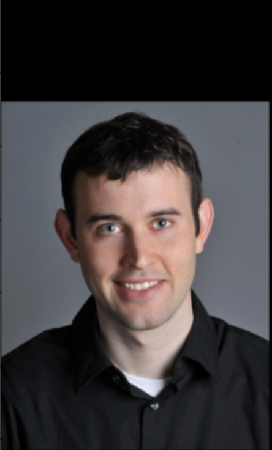Aligned Nutmeg (aligned on eye position)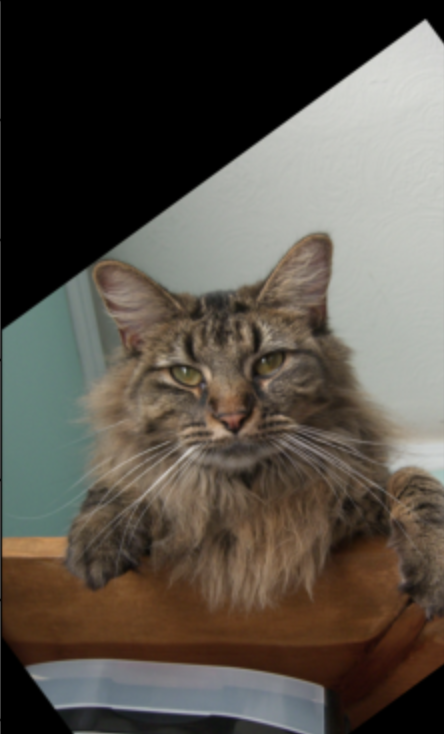Aligned Derek (aligned on eye position)
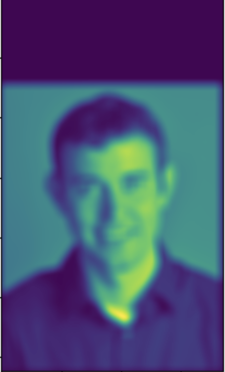 Low Frequency Derek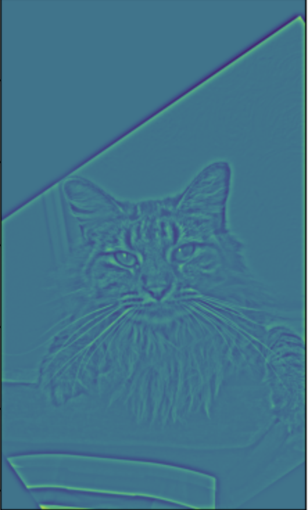 High Frequency Nutmeg
Original Roger Federer Image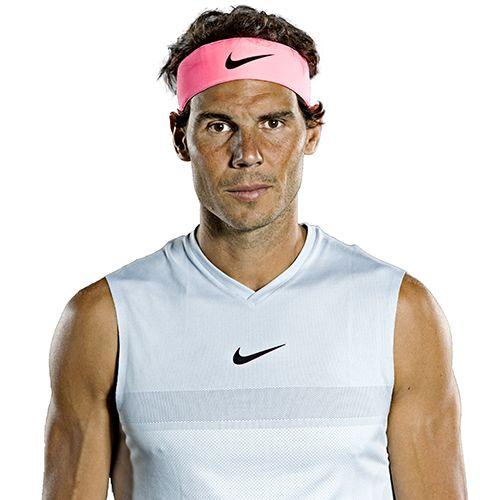Original Rafael Nadal ImageHybrid Roger Nadal (Aligned on ears and grey-scaled)
Albert Einstein and Marilyn Monroe Hybridization
Original Albert Einstein ImageOriginal Marilyn Monroe ImageHybrid Albert Monroe (Aligned on eyes and grey-scaled)
Let's do a detailed fourier space freqeuncy analysis of the Albert Einstein and Marilyn Monroe Intermediary and Final Images
Log-magnitude Fourier Transform of original grey-scaled Albert EinsteinLog-magnitude Fourier Transform of original grey-scaled Marylin Monroe
Log-magnitude Fourier Transform of grey-scaled low-pass filtered Albert EinsteinLog-magnitude Fourier Transform of grey-scaled high-pass filtered Marylin Monroe
Log-magnitude Fourier Transform of grey-scaled hybrid Albert Monroe
Gaussian and Laplacian Stacks
A Gaussian Stack is an array of images, all of the same dimension with downsampling, where each successive image is a gaussian kernel filter convolved result of the previous image.
A Laplacian Stack is again an array of images, all of the same dimension with downsampling, where an image i is obtained by subtracting the (i+1)th image of the Gaussian stack from the ith image. This means each image in this new Laplacian Stack represents different frequency bands of the original image. Below are levels 0, 3, and 6 of the laplacian stacks of the given apple and orange images. 0 => Highest Frequency Band and 6 => Lowest Frequency Band. Please note: During the blending process in the next section, the laplacian stack will also contain the lowest frequency/most blurred image from the gaussian stack as well. This ensures that if we collapse the stack, we retrieve the original image.
Apple Laplacian Stack Level 0Orange Laplacian Stack Level 0
Apple Laplacian Stack Level 3Orange Laplacian Stack Level 3
Apple Laplacian Stack Level 6Orange Laplacian Stack Level 6
Multi-Resolution Image Blending
Now comes the most exciting section of this project. We use the laplacian stacks to blend the image of the apple and the orange to present the oraple. There will also be another fascinating never before seen Tennis Champion reveal.
This is how the process works: we generate a mask (could be a simple horizontal 0-1 mask or a more complicated irregular mask) and create a gaussian stack for it. Now using the mask gaussian stack and the laplacian stacks of the input images, we perform a process illustrated in the image below.
Blending Process Slide from Lecture. We add all the l_{k}s to arrive at the final blended image.
This process blends my face with the image of Roger Federer winning the 2017 Gentlemen's Wimbledon Singles Championship. The process is the almost the same as above. The only difference is that I first align both the images and make them the same dimension, before creating the irregular mask, the gaussian and the laplacian stacks.